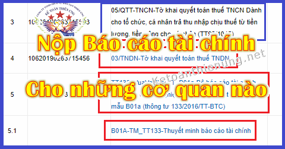

Báo cáo tài chính nộp cho những cơ quan nào? Nộp báo cáo tài chính gồm những gì? Thời hạn nộp báo cáo tài chính? Cách nộp BCTC qua mạng; Chậm nộp BCTC thì phạt bao nhiêu? Kế toán Diệu Tâm xin chia sẻ những quy định về các vấn đề đó.
I, Nộp báo cáo tài chính gồm những gì:
Chú ý: Việc đầu tiên các bạn phải xác định được là Doanh nghiệp mình đang áp dụng chế độ kế toán nào (Vì mỗi chế độ kế toán sẽ áp dụng hệ thống sổ sách, báo cáo tài chính khác nhau).
Cụ thể như sau:
- Doanh nghiệp vừa và nhỏ thì được áp dụng chế độ kế toán theo Thông tư 200 hoặc Thông tư 133 (Nhưng thường sẽ chọn 133 cho dễ sử dụng)
- Doanh nghiệp lớn thì phải áp dụng chế độ ké toán theo Thông tư 200.
Tiêu chí để xác định Doanh nghiệp vừa và nhỏ, lớn (Phụ thuộc vào lĩnh vực hoạt động, số lượng lao động, doanh thu hoặc nguồn vốn), chi tiết các bạn xem tại đây nhé => Tiêu chí xác định doanh nghiệp vừa và nhỏ.
- Sau khi đã xác định xong, các bạn chuẩn bị Bộ báo cáo tài chính năm như sau nhé:
1. Nếu Doanh nghiệp áp dụng chế độ kế toán theo Thông tư 133:
Căn cứ theo điều 71 Thông tư 133/2016/TT-BTC quy định Hệ thống báo cáo tài chính:
Hệ thống báo cáo tài chính năm áp dụng cho các doanh nghiệp nhỏ và vừa đáp ứng bao gồm:
- Báo cáo tình hình tài chính
- Báo cáo kết quả hoạt động kinh doanh
- Bản thuyết minh Báo cáo tài chính
- Bảng cân đối tài khoản
- Báo cáo lưu chuyển tiền tệ
2. Nếu Doanh nghiệp áp dụng chế độ kế toán theo Thông tư 200:
Căn cứ theo điều 100 Thông tư 200/2014/TT-BTC quy định Hệ thống Báo cáo tài chính của doanh nghiệp:
Báo cáo tài chính năm gồm:
- Bảng cân đối kế toán
- Báo cáo kết quả hoạt động kinh doanh
- Báo cáo lưu chuyển tiền tệ
- Bản thuyết minh Báo cáo tài chính
Xem thêm: Cách lập báo cáo tài chính.
----------------------------------------------------------------------------------------
II. Thời hạn nộp Báo cáo tài chính:
Theo điều 109 Thông tư 200/2014/TT-BTC quy định về thời hạn nộp BCTC cụ thể như sau:
1. Đối với doanh nghiệp nhà nước:
a) Thời hạn nộp Báo cáo tài chính quý:
- Đơn vị kế toán phải nộp Báo cáo tài chính quý chậm nhất là 20 ngày, kể từ ngày kết thúc kỳ kế toán quý; Đối với công ty mẹ, Tổng công ty Nhà nước chậm nhất là 45 ngày;
- Đơn vị kế toán trực thuộc doanh nghiệp, Tổng công ty Nhà nước nộp Báo cáo tài chính quý cho công ty mẹ, Tổng công ty theo thời hạn do công ty mẹ, Tổng công ty quy định.
b) Thời hạn nộp Báo cáo tài chính năm:
- Đơn vị kế toán phải nộp Báo cáo tài chính năm chậm nhất là 30 ngày, kể từ ngày kết thúc kỳ kế toán năm; Đối với công ty mẹ, Tổng công ty nhà nước chậm nhất là 90 ngày;
- Đơn vị kế toán trực thuộc Tổng công ty nhà nước nộp Báo cáo tài chính năm cho công ty mẹ, Tổng công ty theo thời hạn do công ty mẹ, Tổng công ty quy định.
2. Đối với các loại doanh nghiệp khác:
a) Đơn vị kế toán là doanh nghiệp tư nhân và công ty hợp danh phải nộp Báo cáo tài chính năm chậm nhất là 30 ngày, kể từ ngày kết thúc kỳ kế toán năm;
- Đối với các đơn vị kế toán khác, thời hạn nộp Báo cáo tài chính năm chậm nhất là 90 ngày;
b) Đơn vị kế toán trực thuộc nộp Báo cáo tài chính năm cho đơn vị kế toán cấp trên theo thời hạn do đơn vị kế toán cấp trên quy định.
----------------------------------------------------------------
Theo Điều 80 Thông tư 133/2016/TT-BTC hướng dẫn Chế độ kế toán doanh nghiệp nhỏ và vừa quy định về trách nhiệm, thời hạn lập và gửi báo cáo tài chính như sau:1. Trách nhiệm, thời hạn lập và gửi báo cáo tài chính:
a) Tất cả các doanh nghiệp nhỏ và vừa phải lập và gửi báo cáo tài chính năm chậm nhất là 90 ngày kể từ ngày kết thúc năm tài chính cho các cơ quan có liên quan theo quy định.
Như vậy:
- Thời hạn nộp Báo cáo tài chính cho các cơ quan (trong đó có Cơ quan Thống kê) chậm nhất là 90 ngày kề từ ngày kết thúc năm tài chính.
- Thời hạn nộp Báo cáo tài chính cho các cơ quan (trong đó có Cơ quan Thống kê) chậm nhất là 90 ngày kề từ ngày kết thúc năm tài chính.
-------------------------------------------------------------------------------------------
Căn cứ theo khoản 2 Điều 44 Luật quản lý thuế số 38/2019/QH14 quy định:
Điều 44. Thời hạn nộp hồ sơ khai thuế
2. Thời hạn nộp hồ sơ khai thuế đối với loại thuế có kỳ tính thuế theo năm được quy định như sau:
a) Chậm nhất là ngày cuối cùng của tháng thứ 3 kể từ ngày kết thúc năm dương lịch hoặc năm tài chính đối với hồ sơ quyết toán thuế năm; chậm nhất là ngày cuối cùng của tháng đầu tiên của năm dương lịch hoặc năm tài chính đối với hồ sơ khai thuế năm;
Như vậy:
- Thời hạn nộp Báo cáo tài chính (hồ sơ quyết toán thuế năm) cho cơ quan thuế chậm nhất là ngày cuối cùng của tháng thứ 3.
Ví dụ: Tháng 3/2022 có 31 ngày thì hạn chậm nhất là ngày 31/3/2022 phải nộp Báo cáo tài chính cho Cơ quan thuế.
Xem thêm: Mức phạt chậm nộp báo cáo tài chính
------------------------------------------------------------------
| Nơi nhận báo cáo | ||||||
| CÁC LOẠI DOANH NGHIỆ (4) | Kỳ lập báo cáo | Cơ quan tài chính (1) | Cơ quan Thuế (2) | Cơ quan Thống kê | DN cấp trên (3) | Cơ quan đăng ký kinh doanh |
| 1. Doanh nghiệp Nhà nước | Quý, Năm | x | x | x | x | x |
| 2. Doanh nghiệp có vốn đầu tư nước ngoài | Năm | x | x | x | x | x |
| 3. Các loại doanh nghiệp khác | Năm | x | x | x | x | |
Chú ý: Khi nộp Báo cáo tài chính cho Cơ quan Thuế:
Căn cứ theo khoản 3 Điều 43 Luật quản lý thuế số 38/2019/QH14 quy định:
Điều 43. Hồ sơ khai thuế
3. Hồ sơ khai thuế đối với loại thuế có kỳ tính thuế theo năm bao gồm:
a) Hồ sơ khai thuế năm gồm tờ khai thuế năm và các tài liệu khác có liên quan đến xác định số tiền thuế phải nộp;
b) Hồ sơ khai quyết toán thuế khi kết thúc năm gồm tờ khai quyết toán thuế năm, báo cáo tài chính năm, tờ khai giao dịch liên kết; các tài liệu khác có liên quan đến quyết toán thuế.
Như vậy: Khi nộp hồ sơ quyết toán thuế năm cho Cơ quan thuế thì ngoài Bộ báo cáo tài chính năm theo quy bên trên thì Doanh nghiệp còn phải nộp thêm các Tờ khai quyết toán thuế năm, như sau nhé:
- Tờ khai Quyết toán thuế thu nhập cá nhân mẫu 05/QTT-TNCN (Nếu trong năm không trả lương cho bất kỳ 1 nhân viên nào, thì không phải nộp)
Xem thêm: Cách lập tờ khai quyết toán thuế 05/QTT-TNCN.
- Tờ khai quyết toán thuế thu nhập doanh nghiệp theo mẫu 03/TNDN. Trong Tờ khai quyết toán thuế TNDN sẽ kèm theo 1 số phụ lục (tùy theo phát sinh thực tế tại DN) ví dụ như:
- Phụ lục kết quả hoạt động sản xuất kinh doanh theo mẫu số 03-1A/TNDN, mẫu số 03-1B/TNDN, mẫu số 03-1C/TNDN.
- Phụ lục chuyển lỗ theo mẫu số 03-2/TNDN
- Các Phụ lục về ưu đãi về thuế thu nhập doanh nghiệp:
- Phụ lục thuế thu nhập doanh nghiệp đối với hoạt động chuyển nhượng bất động sản.
- Phụ lục thông tin về giao dịch liên kết (nếu có) theo mẫu 03-7/TNDN.
Xem thêm: Cách lập tờ khai quyết toán thuế 03/TNDN.
----------------------------------------------------------------------------------
1. Đối với các doanh nghiệp Nhà nước đóng trên địa bàn tỉnh, thành phố trực thuộc Trung ương phải lập và nộp Báo cáo tài chính cho Sở Tài chính tỉnh, thành phố trực thuộc Trung ương. Đối với doanh nghiệp Nhà nước Trung ương còn phải nộp Báo cáo tài chính cho Bộ Tài chính (Cục Tài chính doanh nghiệp).- Đối với các loại doanh nghiệp Nhà nước như: Ngân hàng thương mại, công ty xổ số kiến thiết, tổ chức tín dụng, doanh nghiệp bảo hiểm, công ty kinh doanh chứng khoán phải nộp Báo cáo tài chính cho Bộ Tài chính (Vụ Tài chính ngân hàng hoặc Cục Quản lý giám sát bảo hiểm).
- Các công ty kinh doanh chứng khoán và công ty đại chúng phải nộp Báo cáo tài chính cho Uỷ ban Chứng khoán Nhà nước và Sở Giao dịch chứng khoán.
2. Các doanh nghiệp phải gửi Báo cáo tài chính cho cơ quan thuế trực tiếp quản lý thuế tại địa phương. Đối với các Tổng công ty Nhà nước còn phải nộp Báo cáo tài chính cho Bộ Tài chính (Tổng cục Thuế).
3. Doanh nghiệp có đơn vị kế toán cấp trên phải nộp Báo cáo tài chính cho đơn vị kế toán cấp trên theo quy định của đơn vị kế toán cấp trên.
4. Đối với các doanh nghiệp mà pháp luật quy định phải kiểm toán Báo cáo tài chính thì phải kiểm toán trước khi nộp Báo cáo tài chính theo quy định. Báo cáo tài chính của các doanh nghiệp đã thực hiện kiểm toán phải đính kèm báo cáo kiểm toán vào Báo cáo tài chính khi nộp cho các cơ quan quản lý Nhà nước và doanh nghiệp cấp trên.
5. Cơ quan tài chính mà doanh nghiệp có vốn đầu tư trực tiếp nước ngoài (FDI) phải nộp Báo cáo tài chính là Sở Tài chính các tỉnh, thành phố trực thuộc Trung ương nơi doanh nghiệp đăng ký trụ sở kinh doanh chính.
6. Đối với các doanh nghiệp Nhà nước sở hữu 100% vốn điều lệ, ngoài các cơ quan nơi doanh nghiệp phải nộp Báo cáo tài chính theo quy định trên, doanh nghiệp còn phải nộp Báo cáo tài chính cho các cơ quan, tổ chức được phân công, phân cấp thực hiện quyền của chủ sở hữu theo Nghị định số 99/2012/NĐ-CP và các văn bản sửa đổi, bổ sung, thay thế.
7. Các doanh nghiệp (kể cả các doanh nghiệp trong nước và doanh nghiệp có vốn đầu tư nước ngoài) có trụ sở nằm trong khu chế xuất, khu công nghiệp, khu công nghệ cao còn phải nộp Báo cáo tài chính năm cho Ban quản lý khu chế xuất, khu công nghiệp, khu công nghệ cao nếu được yêu cầu.
-----------------------------------------------------------------------------------
Nộp báo cáo tài chính cho cục Thống kê:
-> Các bạn liên hệ với Cơ quan thống kê Quận (Huyện) quản lý DN để nộp trực tiếp nhé.
Chú ý: (Thông thường cơ quan Thống kê sẽ gửi vào mail mà DN đăng ký các mẫu biểu kèm theo để nộp cùng với Bộ Báo cáo tài chính bên trên)
-> Các bạn liên hệ với Cơ quan thống kê Quận (Huyện) quản lý DN để nộp trực tiếp nhé.
Chú ý: (Thông thường cơ quan Thống kê sẽ gửi vào mail mà DN đăng ký các mẫu biểu kèm theo để nộp cùng với Bộ Báo cáo tài chính bên trên)
--------------------------------------------------------------------------
Mức phạt chậm nộp BCTC cho Cơ quan Thống kê:Căn cứ theo Điều 7 và điều 8 Nghị định 95/2016/NĐ-CP quy định về thời hạn báo cáo thống kê, báo cáo tài chính gửi cơ quan thống kê nhà nước theo quy định của pháp luật và Vi phạm quy định về yêu cầu đầy đủ của báo cáo thống kê:
|
1. Phạt cảnh cáo đối với hành vi nộp báo cáo chậm so với chế độ quy định: a) Dưới 05 ngày đối với báo cáo thống kê tháng; b) Dưới 10 ngày đối với báo cáo thống kê, báo cáo tài chính quý, 6 tháng, 9 tháng; c) Dưới 15 ngày đối với báo cáo thống kê, báo cáo tài chính năm. |
|
2. Phạt tiền từ 1.000.000 đồng đến 3.000.000 đồng đối với hành vi nộp báo cáo chậm so với chế độ quy định: a) Từ 05 ngày đến dưới 10 ngày đối với báo cáo thống kê tháng; b) Từ 10 ngày đến dưới 15 ngày đối với báo cáo thống kê, báo cáo tài chính quý, 6 tháng, 9 tháng; c) Từ 15 ngày đến dưới 20 ngày đối với báo cáo thống kê, báo cáo tài chính năm. |
|
3. Phạt tiền từ 3.000.000 đồng đến 5.000.000 đồng đối với hành vi nộp báo cáo chậm so với chế độ quy định: a) Từ 10 ngày đến 15 ngày đối với báo cáo thống kê tháng; b) Từ 15 ngày đến dưới 20 ngày đối với báo cáo thống kê, báo cáo tài chính quý, 6 tháng, 9 tháng; c) Từ 20 ngày đến dưới 30 ngày đối với báo cáo thống kê, báo cáo tài chính năm. |
|
4. Phạt tiền từ 5.000.000 đồng đến 10.000.000 đồng đối với hành vi nộp báo cáo chậm so với chế độ quy định: a) Từ 20 ngày đến 30 ngày đối với báo cáo thống kê, báo cáo tài chính quý, 6 tháng, 9 tháng; b) Từ 30 ngày đến 45 ngày đối với báo cáo thống kê, báo cáo tài chính năm. |
|
5. Phạt tiền từ 10.000.000 đồng đến 20.000.000 đồng đối với hành vi không báo cáo thống kê, báo cáo tài chính. - Hành vi không báo cáo thống kê, báo cáo tài chính được quy định là sau 15 ngày đối với chế độ quy định đối với báo cáo thống kê tháng, sau 30 ngày đối với báo cáo thống kê, báo cáo tài chính quý, 6 tháng, sau 45 ngày đối với báo cáo thống kê, báo cáo tài chính năm mà chưa gửi báo cáo thống kê, báo cáo tài chính cho cơ quan thống kê có thẩm quyền. |
|
1. Phạt tiền từ 1.000.000 đồng đến 3.000.000 đồng đối với hành vi báo cáo không đầy đủ số lượng biểu hoặc chỉ tiêu thống kê của chế độ báo cáo thống kê tháng. |
|
2. Phạt tiền từ 3.000.000 đồng đến 5.000.000 đồng đối với hành vi báo cáo không đầy đủ số lượng biểu hoặc chỉ tiêu thống kê của chế độ báo cáo thống kê quý, 6 tháng, 9 tháng. |
|
3. Phạt tiền từ 5.000.000 đồng đến 10.000.000 đồng đối với hành vi báo cáo không đầy đủ số lượng biểu hoặc chỉ tiêu thống kê của chế độ báo cáo thống kê năm. |
--------------------------------------------------------------------------------------------
Kế toán Diệu Tâm chúc các bạn làm tốt công việc kế toán!
Nếu bạn muốn học thực hành kê khai thuế, hạch toán sổ sách, lương, BHXH, lập Báo cáo tài chính, Quyết toán thuế TNCN, TNDN cuối năm ...
-> Có thể tham gia lớp học kế toán thực hành thực tế.
--------------------------------------------------------------------------------------------------
Nếu bạn muốn học thực hành kê khai thuế, hạch toán sổ sách, lương, BHXH, lập Báo cáo tài chính, Quyết toán thuế TNCN, TNDN cuối năm ...
-> Có thể tham gia lớp học kế toán thực hành thực tế.
--------------------------------------------------------------------------------------------------
